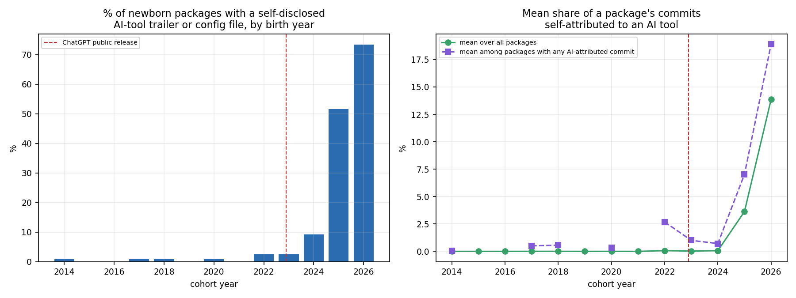
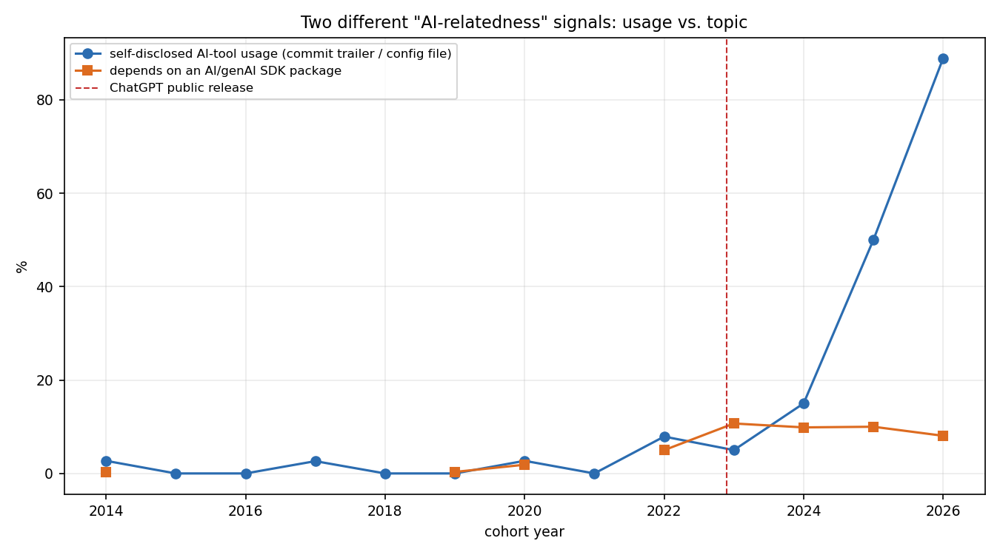
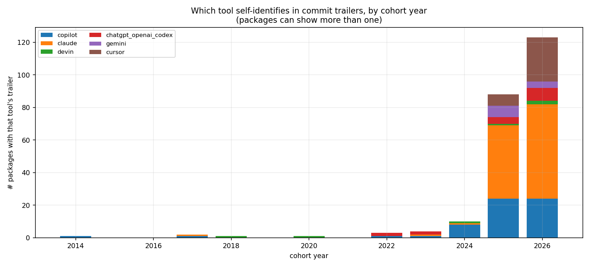

DEPENDENCY_REPORT.md measured whether newborn
packages depend on AI/genAI SDKs (openai, transformers, ...) — a
topic signal, what a package is about. This report measures something
different: direct, retrospective evidence that a package's own code was
written with an AI coding tool, read straight out of its git history.
Same 1,530 vintage-cohort packages, a completely different signal.
Headline: self-disclosed AI-tool usage went from ~0% of newborn packages through 2021 to 73% of the (partial) 2026 cohort, and by 2025–2026 it has overtaken AI-topic SDK dependence as the dominant "AI-relatedness" signal in this sample — recent packages are more likely to be written by an AI tool than to merely depend on one.
Two signal types, both read from git objects already reachable via each
package's clone_url + snapshot_sha in output/vintage/packages.csv
(same --no-checkout clone discipline as everywhere else in this
project):
Co-Authored-By: Claude convention visible in this very project's own
commit history. Scanned across a package's entire history up to its
snapshot commit (not just a window), matched against explicit
co-authorship/generation patterns for Claude, GitHub Copilot, Cursor,
ChatGPT/OpenAI Codex, Devin, Gemini, Amazon Q, Windsurf, Replit, and
Aider.CLAUDE.md, .cursorrules, .github/copilot-instructions.md,
AGENTS.md, .windsurfrules, and the .claude/, .cursor/,
.continue/, .windsurf/ directories — checked for presence at the
snapshot commit.Deliberately strong-signal, low-recall: matching only explicit
co-authorship trailers (not bare mentions of a tool's name) means a
positive here is solid evidence — nobody accidentally writes
Co-Authored-By: Claude — but a negative proves nothing. Most
AI-assisted commits (autocomplete completions, chat-suggested code pasted
in by hand, anything committed under a human's own identity) leave no
trace at all. This measures self-disclosed usage, not true usage, and
it is a floor, not an estimate of the real rate.

| cohort year | packages | % with any AI-tool signal | mean commit-share attributed to AI (all packages) |
|---|---|---|---|
| 2014–2021 | 958 | 0–0.8% (noise) | ~0% |
| 2022 | 120 | 2.5% | 0.07% |
| 2023 | 120 | 2.5% | 0.03% |
| 2024 | 120 | 9.2% | 0.07% |
| 2025 | 120 | 51.7% | 3.6% |
| 2026 (Q1–Q3, partial) | 90 | 73.3% | 13.9% |
Trend is strong and significant: Spearman ρ=0.77, p=0.0022 for adoption rate; ρ=0.77, p=0.0023 for mean AI-attributed commit share. 2026 is a partial year (through the extraction date) on a smaller sample (90 packages, vs. 120 for a full year) — the rate should be read as "the most recent few months look even more extreme than 2025," not taken as a precise annual figure. (An earlier pass at ~10 packages/quarter found 88.9% for the partial 2026 cohort on just 27 packages — the more reliable 73.3% here, on more than 3x that sample, is the number to trust; the overall shape and every other year are essentially unchanged.)

Through 2022–2024, self-disclosed AI-tool usage and AI-SDK dependency share moved roughly together (both in the 2–10% range) — consistent with "AI-relatedness" mostly meaning packages about AI. From 2025 onward they diverge sharply: AI-SDK dependency share plateaus around 8–9%, while self-disclosed tool usage keeps climbing to 52% then 73%. By 2025–2026, most of the AI signal in this sample is about how a package was written, not what it does. A package no longer needs to be an AI application for AI to plausibly have written parts of it.
Repos with "claude," "copilot," "cursor," "skill," or "agent" in their own name (Claude-skill libraries, agent-tooling meta-packages) are 26 of the 149 packages showing any AI signal (17%, an even smaller share than the 22% seen at 10/quarter) — a real presence, but a minority. Restricting to the other 123 (packages with no such self-referential name — a stock-analysis tool, a video-editing toolkit, a browser-automation harness, several of Andrej Karpathy's ML research repos, and others with no obvious connection to AI tooling as a topic) the same rising pattern holds: 1 in 2014, 1 in 2017, 1 in 2018, 1 in 2020, 3 in 2022, 3 in 2023, 11 in 2024, 46 in 2025, 56 in 2026 (partial year). This is broad-based, not an artifact of a self-referential AI-tooling category inflating the numbers, and it's an even cleaner result at 3x the sample.

Claude dominates the trailer counts from 2024 onward (1 in 2024, 45 in
2025, 58 in 2026), ahead of Copilot (8, 24, 24) and Cursor (0, 7, 27).
This is not a reliable read of which tool is used most — it's at least
as much a read of which tool discloses itself most consistently by
default. Claude Code (this very project's own tool) adds a
Co-Authored-By: Claude trailer to every commit unless a user
disables it; GitHub Copilot's inline autocomplete, by contrast, is
attributed to nothing by default — a developer accepting Copilot
suggestions inside their own commits is invisible to this method
entirely. Copilot in particular is almost certainly undercounted here
far more than Claude or Cursor are, simply because its most common mode
of use leaves no marker to find. Read the adoption-rate trend (a tool was
used) as the reliable finding; read the tool-breakdown chart (which tool)
as biased toward whichever tools happen to self-disclose by convention,
not as a market-share estimate.
Some 2025–2026 packages are majority AI-attributed by commit count:
2akouwu/reverify (85.5%, 71/83 commits), ShenSeanChen/waku-agent
(84.3%), teng-lin/notebooklm-py (73.2%, 1,286/1,756 commits),
Imbad0202/academic-research-skills (70.6%), yusufkaraaslan/Skill_Seekers
(61.4%), Graphify-Labs/graphify (51.3%, 861/1,678 commits). The last is
worth flagging on its own: it's the same repo noted in the vintage-cohort
study as showing star counts implausible for a repo only months old
(115,989 stars) — a heavily-AI-agent-driven project, a bot-inflated one,
or both; either reading is consistent with an unusually high
self-disclosed AI-commit share. Also worth noting:
anthropics/claude-agent-sdk-python (40.6%) — Anthropic's own SDK for
building Claude-based agents, itself substantially built with Claude.
Full table: output/ai_signal/analysis/top15_ai_attributed.csv.
The closest published counterpart is Robbes et al.'s census of coding-agent adoption across 128,018 GitHub projects, using the same core signal this report relies on — explicit commit-level traces such as co-authoring — because, as they put it, unlike completion-only tools, agents "tend to leave more explicit traces in software engineering artifacts" [1]. Their measured adoption rate as of February 2026 (22.2%–28.66%, and rising) sits below this report's 73% for the 2026 birth-cohort, but the two studies aren't measuring the same population: Robbes et al. sample all of GitHub regardless of project age, while this report specifically follows newly-founded packages — which the vintage-cohort study already found is the part of the ecosystem where every code-shape metric moved fastest. A newborn-package sample showing higher AI-tool prevalence than an all-ages one is exactly what you'd expect if AI-tool adoption itself correlates with project recency, which both studies independently point toward. Robbes et al. also found that agent-assisted commits are larger than human-only commits [1] — an independent corroboration of this project's own vintage-cohort finding that median added-lines-per-hunk, flat for a decade, climbs sharply starting specifically 2025Q3, the same window this report's adoption curve inflects.
Khosravani et al.'s multi-method census across 180 million repositories in World of Code is the most methodologically direct comparison: they combine configuration-file scanning, commit-message analysis, author-identity matching, and bot-signature lookup — the same two signal families this report uses (commit trailers, config files), plus two this report doesn't (author-identity, bot-account matching) [2]. Their central finding validates this report's central caveat with a hard number: bot-account lookup, "the signal most adoption studies rely on," recovers only 3.3% of the Claude Code commits their full multi-method approach finds — a 30× relative-recall gap. That quantifies, for a sibling methodology, exactly the undercounting this report describes qualitatively for GitHub Copilot's silent autocomplete mode. Khosravani et al. also find Claude Code "dominates silent, configuration-file-only adoption" among the tools they track [2], matching this report's own tool-breakdown finding — both studies converge on the same tool topping the self-disclosure ranking, reinforcing that the ranking reflects disclosure convention, not necessarily usage share.
Xiao et al.'s earlier "self-admitted GenAI usage" study, searching commit messages, code comments, and documentation across 200,000+ repositories, found only 1,292 such self-admissions across 156 repositories [3] — a far lower prevalence than this report's later numbers, consistent with (not contradicting) this report's own finding that self-disclosed usage was near-zero before 2024 and only became common in 2025–2026; the two studies sit at different points on the same rising curve. Xiao et al. also report finding "no general increase" in code churn following GenAI adoption [3] — a caveat worth carrying alongside this report's own commit-velocity numbers, since neither study establishes that AI-tool usage causes more code to be written, only that it's increasingly present.
[1] Agentic Much? Adoption of Coding Agents on GitHub (Robbes et al., 2026, ACM Transactions on Software Engineering and Methodology)
[2] Detecting AI Coding Agents in Open Source: A Validated Multi-Method Census of 180 Million Repositories (Khosravani et al., 2026, ArXiv)
[3] Self-Admitted GenAI Usage in Open-Source Software (Xiao et al., 2025, IEEE Transactions on Software Engineering)
output/ai_signal/ai_signals.csvoutput/ai_signal/analysis/*.csvpython3 src/ai_signal_extract.py && python3
src/ai_signal_analysis.py && python3 src/ai_signal_charts.py
(requires output/vintage/packages.csv from the vintage-cohort study
and output/deps/analysis_time/ from the dependency time-analysis)